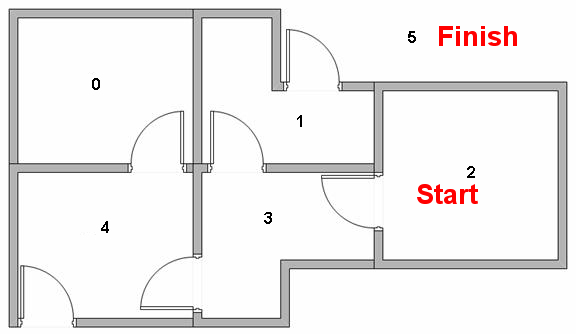
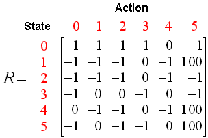

TL;DR 图形游戏（比如坦克大战）如果要实现智能Agent（AKA 电脑玩家）的话，目前最佳的方案就是Reinforcement Learning (简称 RL ;中文：增强学习)。 本文记录了我和Reinforcement Learning的第一次交手，将带你了解这位名扬四海却又神秘莫测的对手。:)
背景
公司举办Hackthon（中国：黑客松 <- 来自维基百科的翻译），其中有一道题是实现坦克大战的玩家程序。在别人普遍使用人工策略的情况下，考虑到我们团队人少（精确的讲只有我一人会写程序，其他团队起码三个程序员），所以在人工策略这条路上肯定是非常的吃亏，所以不如另辟蹊径，拼搏一把（反正也基本出不了初赛了)。于是我们选择了让机器学习的方案。于是 就成了目标。在此之前，我也只是听过RL的大名，现在要使用RL，内心是既兴奋又紧张。
Reinforcement Learning
概念
为了更加容易理解，我们将引入坦克大战的例子来辅助讲解。总的来说RL模型将现实世界的问题抽象成两类对象的交互：Enviroment和Agent，对坦克大战而言，游戏就是Enviroment，而游戏玩家就是Agent。
Enviroment提供observation：这是Agent对外界环境的观察，坦克大战中，游戏的图形界面就是Agent(游戏玩家)对Enviroment（游戏）的observation。Agent使用自己的逻辑，根据对observation的理解，给出一个action：这表示对外界环境的一个操作或者反馈，坦克大战中游戏玩家的操作就是action。action在每个step中会被发送给Enviroment,Environment则会返回新的observation和reward。reward表示的是当前情况下Environment对aciton的反馈：数值可能正数也可能负数也可能是零，坦克大战中坦克被击毁、击毁敌方坦克、获取装备或者旗帜等直接得分或者失分都算是reward。然后Agent根据新的observation给出新的action,如此循环往复。聪明的算法能在observation、action和reward中发现关系，使得每一次给出的action都能得到最大期望的reward。

特点
与Supervised Learning不同的是，Reinforcement Learning要解决的问题是存在reward delay现象的，也就是说Reinforcement Learning会考虑全局最优，而不是当前这一步是最优的，避免“赢了战役，输了战争”这种现象。坦克大战中的例子就是高级玩家可能会选择一种策略：即使不停的被攻击，他的坦克不选择躲避炮弹而是选择承受炮火的同时持续不断的攻击你的基地的外墙。只看一步操作而言，这样的行动是失败的，因为己方的某一辆坦克被击毁，但从长远的角度来看，你能在最后一辆己方坦克被击毁前成功的击毁对方的基地。
Q-learning 算法
我们将介绍Reinforcement Learning中比较容易理解的算法：Q-learning
Q-learning 简介
TODO
实验环境
我们将引入一个简单的环境：一个房子。这个房子由5个房间构成（编号：0 - 4），连上房子外的空间（编号：5），共六个状态。房间之间与房间和户外空间之间可能存在门，也就是相互联通。如下图所示：

我们根据房间的联通状态，将上述的物理房间图抽象，将每个房间抽象成一个节点(Node)或者状态（state),房子之间存在联通关系的则用一个有向边表示（因为房门是双向联通，所以每个房门对应两个相向的有向边），如下图所示：

在这个例子中，我们的目标是将 agent （抽象概念） 从房间里移动到户外空间。Q-learning 的目标是到达 reward 最高的状态，而在本例中，状态 5 就是我们想要的目标状态（也称最终状态），Q-learning 到达目标状态后就会永久留在目标状态，因此我们给状态 5 增加一个指向自己的有向边（如上图示）。这种目标或者状态称之为 absorbing goal 或者 absorbing state。
为了让状态 5 成为目标状态，我们将所有指向状态 5 的有向边全部赋值 reward=100 ，除此之外的边全部赋值 reward=0 。如下图所示：

假设本例子中的 agent 是一个笨笨的虚拟机器人，它会从以前的经验中学习知识，它能够从一个房间到另一个房间，但它不知道房间的情况也不知道从房间到外面空间的路径。
假设本例子的目标是建立一个模型帮助 agent 从房子中的 任意一个房间 出发到达户外空间。现在我们假设 agent 在房间 2 ，我们想要让它学习如何到达户外空间。如下图所示：

为了和 Reinforcement Learning 保持一支，我们特别将每个房间 Node 称之状态（state）或者叫做 observation ，而将 agent 的每一次移动称之为 action。observation 在这里有点难以理解，所以这里使用 状态（state）这个 Q-learning 术语。在本例子中，action 使用有向边来表示。如下图所示：

从状态 2 agent 可以到达状态 3，这是因为状态 2 存在到状态 3 的有向边，也就是存在联通的门。状态 2 不能直接到达状态 1，这是因为状态 2 不存在到达状态 1 的有向边，也就是这两个房间之间不存在门。状态 3 可以到达状态 1 、状态 4 和回到状态 2。agent 在状态 1 和状态 0 的可能到达状态，读者可以自行观察，不再赘述。我们将上述所有可能状态、 action 和 reward 编制成一张表：得到 matrix R。如下图所示。

NOTE 表中的 -1 表示无效值，也就是这个 action 不存在，比如不存在从状态 0 到状态 1 的 action 或者说门。
我们将增加一个相似的矩阵 matrix Q ，用于表示 agent 从中学习的知识。matrix Q 的每一个行代表一个前一个状态，每一列表示下一个状态。刚开始时，agent 并没有学习到任何知识，所以 matrix Q 中的值初始化为 0. 在本例子中，我们已经知道所有的状态数为 6， 在现实例子中，这个数可能是未知的，所以初始化的时候可能只有一行一列，当发现新的状态时，Matrix Q 可以增加新的行和列。
Q-learning 的状态转移规则如下：
$$ Q(state, action) = R(state, action) + \gamma * Max[Q(next state, all actions)] $$
按照这个公式，赋值Q中一个元素的值等于 Matrix R 中的相应的值和 $\gamma$ (学习参数) 乘以 下一个状态中所有的action的最大的 Q reward。
我们的 agent 不需要老师就能从经验中学习，因此这个是 非监督学习。每一次 agent 从一个状态转到另一个状态，最终达到目标状态。这样的一次探索过程我们称之为 episode。每一个 episode 包含了 agent 从初始状态到目标状态的所有的 action。每当 agent 到达目标状态时，我们就开始下一个 episode。
Q-Learning 算法大体运行如下：
Set the gamma parameter, and environment rewards in matrix R.
Initialize matrix Q to zero.
For each episode {
Select a random initial state.
Do While the goal state hasn't been reached. {
Select one among all possible actions for the current state.
Using this possible action, consider going to the next state.
Get maximum Q value for this next state based on all possible actions.
Compute: Q(state, action) = R(state, action) + Gamma * Max[Q(next state, all actions)]
Set the next state as the current state.
}
}